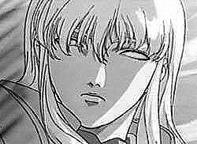

Récits Légendes de Kirin Tor Personnages Célébrités Guildes
Outils Calendrier Calendrier Illustré Mod d'interface
Informations Historiens FAQ Liens Crédits
Les légendes de Kirin Tor
Valnar
Mail : ==> Afficher les personnages de Valnar
Valnar
 Age : 27 (environ)
Age : 27 (environ)
Sexe : Homme
Race : Humain
Faction : Alliance
Formation : Mage
Description : Prologue
Au cours des événements de la première guerre qui opposa la l'Alliance à la Horde, on put retenir bons nombres de reçits de batailles épiques opposant les courageux soldats à la terrible marée verte. Rares sont ceux qui évoquent une situation différente...
Pourtant, au sein des archives du Sanctuaire des Mages de Stormwind, se trouve un écrit étrange, celui d'une nuit ou hommes et orcs furent unis dans la même peur et la même haine envers une puissance furieuse qui détruisit toute vie autour d'elle le temps d'un cri...
Cette nuit là, l'Alliance perdit un village entier et un bataillon de la garde de Stormwind. La Horde perdit de très nombreux braves. Les rares survivants de ce cataclysme, lorsqu'on leur demanda ce qu'il était arrivé, répondirent que cette nuit-là, un démon s'était éveillé...
Ca commence...
Bien des années plus tard, l'aube se levait à nouveau sur l'Abbaye de Northshire, a travers une fenêtre, un rayon de lumière vint éclairer le visage endormit de Valnar, celui ci frémit au contact de la chaleur. Cela faisait des jours qu'il n'avait pu dormir, son professeur l'avait fait revenir de son "pèlerinage forcé" en Kalimdor et ce périlleux voyage n'avait prit fin il y n' a que quelques heures seulement. Le jeune homme etait supposé se lever et rejoindre son maître dans l'instant, il le savait...Il se retourna sur sa paillasse et se rendormit.
Khelden Bremen Montait les marches de l'Abbaye en marmonnant. Son disciple allait recevoir l'honneur d'être accepté au sein des magus de la Cité de Stormwind, et il préférait flemmarder! L'Alliance était dans une situation si désespérée, au point d'offrir ce titre au premier aspirant Mage venu? Il avait certes un potentiel, mais de là a être convié par l'Archimage Malin en personne...
Le maître Mage arriva frappa a la porte de son disciple.
-Valnar?
Pas de réponse, il dormait encore, Bremen sentait la douce chaleur qui émanait de la pièce, il rêvait encore, le feneant!
-Valnar! Tu veux peut etre que je vienne te chercher!?
La chaleur s'estompa, après quelques minutes,Un jeune homme au corps fin lui ouvrit, il avait a peine prit le temps de mettre un pantalon et ne semblait même pas gêné d'arborer cette tenue face à son supérieur. Ses traits fins s'éclairèrent et il repoussa quelques une des longues mèches rousses qui cachaient son visage. Il sourit, l'air doux et chaleureux.
-Ha, maître! Heureux de vous voir! Comment vous portez vous? Je ne...
-Ça va, ça va! Gronda le maître. Garde ton air angélique pour plus tard, tu en aura besoin pour expliquer aux grands Mages pourquoi tu est en retard si tu ne te hâte pas de partir tout de suite pour Stormwind!
Le jeune homme parut étonné. Il scruta le visage de Bremen avec les deux rubis qui lui servaient d'yeux, ne perdant rien de son expression, presque agaçante.
-Je repars... pour Stormwind?
-C'est pourquoi j'ai demandé ton retour, L'Archimage Malin veut te voir.
Le nom du maître magicien fit momentanément perdre son sourire au jeune homme.
-Ah! Assez papoter, finis de te préparer, je veux que tu passe par Goldshire auparavant. Presse toi!
Sans se faire attendre, le jeune homme ferma sa porte... Il s'adossa à cette dernière et prit une grande inspiration, l'espace d'une petite seconde, les longs tatouages longeant son corps frémirent d'énergie. L' Air toujours calme, il murmura:
-Ça commence...
Plus d'infos sur Valnar >>>
Lire les 19 récits de Valnar >>>
Valring
Age : 27 (environ)Sexe : Homme
Race : Mort-vivant
Faction : Horde
Formation : Mage
Description : Il attendait encore...Il ne faisait que ça. Sa tâche n'était guère passionnante, mais il n'aurait jamais je courage de partir au combat...Alors c'était mieux ainsi...Ainsi Se passaient les sombres jours du fossoyeur Mordo depuis qu'il avait rejoint les reprouvés. A attendre ceux qui, dans le cimetière du Glas, reviendraient à la vie pour servir la dame noire, ou à brûler les corps qui sont trop abîmés pour revenir autrement que sous la forme de zombis ou de squelettes du fléau.
Il soupira, la crypte qu'il gardait était sûrement vide, plus aucun reprouvé n'en était sortit depuis des jours. Ce n'était plus la peine d'attendre. C'est a cet instant que de légers murmures, presque inaudibles, s'échappèrent de la sinistre construction. Un nouveau venu? Mordo s'approcha pour entendre, un souffle froid le frappa, et il poussa un gémissement alors qu'un de ses yeux fut littéralement gelé.
Le souffle cessa, mais pas les murmures, Le fossoyeur décida d'entrer. A mesure qu'il s'enfonçait dans les ténèbres, le froid l'enveloppait, de plus en plus mordant, les murmures se faisaient plus clairs, chantant des histoires de morts, de haine et de vengeance, Jamais dans toute sa vie (et sa non vie) il ne s'était senti si mal a l'aise. Il arriva enfin devant la porte de la dernière pièce de la crypte, dans cette salle furent placées les premières victimes du fléau, jusque là, il n'en était sorti que des zombis totalement asservis par le Roi Liche. Tout cela était également de son fait? Mordo hésita longuement avant de pousser lentement la lourde porte. Au même moment, un cri déchirant fit taire les murmures, et toute la crypte fut ébranlée par une terrible tempête glacée, les murs et les os se couvrirent de givres, de nombreuses salles s'effondrèrent. Quand le cri cessa, Mordo, affalé à terre dans les décombres, découvrit alors un spectacle unique, dantesque.
Au milieu de la pièce totalement glacée, se tenait un jeune homme, un mort vivant, son corps a l'allure frêle était encore dans un état plus que correct, ses traits jeunes et beaux trahissaient le jeune age qu'il pouvait avoir à sa mort, ses longs cheveux blancs a la teinte bleutée couvraient encore la totalité de son crâne. On aurait pu le croire encore en vie si ses os ne s'échappaient pas, à son ventre, ses bras ou ses jambes, au delà de la chair, si sa peau n'avait pas cette pâleur froide et si ses yeux ne dégageaient pas cette lueur glacée, saturée d'énergie magique. Des caractéristiques propres à beaucoup de reprouvés, mais qui marquaient encore plus le nouveau venu. Il se tenait là, légèrement cambré, un large sourire au visage. C'était à la fois magnifique et terrifiant, ce jeune homme, au milieu du chaos dont il était sûrement à l'origine, évoquait quelque chose de terrible, de mortel.
Il posa son regard sur le fossoyeur et ce dernier frissonna. Bien que le nouveau Reprouvé ne lui prêta aucune attention lorsqu'il passa silencieusement près de lui, à cet instant précis, Mordo eu aussi peur que ce jour où il rencontra la mort...
L'étrange jeune homme quitta le sépulcre, suivit par le froid mordant qui quitta peu a peu les lieux. Le vieux Mordo reprit sa place. Se demandant parfois ce qu'il est advenu de celui qu'il appelle parfois le "Démon".
1-La colère
Pendants des années, j'ai erré. Des saisons entières, rampé comme une larve, condamné à un destin misérable, n'existant plus que pour ma vengeance. Mon esprit sort peu à peu des limbes, alors que je revoit qu'est ce qui me pousse aujourd'hui a accepter cette renaissance. Les images les plus recentes d'abord, L'armée de goules et cette abomination sur moi, la bataille au Lordaeron. Puis ces années, terré dans ces caves et ces grottes, façonnant lentement l'arme de ma revanche. Et enfin lui, lui, ce démon, qui m'a volé mon existence, qui a balayé mon avenir en une nuit.
Mon corps s'anime alors que le froid de la mort fait frissonner la moindre parcelle de chair qui me reste encore. Je sens une affreuse pression contre ma poitrine alors que mes poumons tentent de se remettre en marche. C'est parfaitement vain, je sens les côtes qui les traversent à chaque geste. Mon corps est en lambeau, J'ai perdu jusqu'à la vitalité de ce corps jeune, qui avait déjà tant souffert. Peu importe. Du moment qu'il me permette de réaliser mon seul but désormais.
Je sens ma main, une main nouvelle, décharnée, griffue, qui se crispe et qui s'élève lentement en l'air, comme pour annoncer mon retour. Mais je ne suis pas de retour, Je suis mort et rien ne pourra être comme avant. Peu importe, plus rien ne pouvait être "comme avant" après ce qu'il a fait. Ma résurrection s'achève, mes yeux s'ouvrent, derrière un voile froid et terne, je vois les murs de ma tombe. Puis je ressens la douleur, ce mal, celui du dernier coup qu'on m'a porter, celui de ces années de décrépitude, celui de mon coeur glacé qui tente pourtant de battre. Je pousse un cri, pas un cri comme celui des nouveaux nés aux premiers instants de leur vie, mais un cri de colère, Cette fureur endormie pendant tout ce temps se libère a nouveau, je la laisse m'envahir. A la fin, la crypte est couverte de glace. Ma puissance, je ne l'ai pas perdue, au contraire, et finalement, je n'aurai jamais cru me sentir si bien. Puis les images défilent, un entraînement aux sciences d'arcanes avec un maître archimage... Le lien s'est reformé...Oui, qu'il sache, qu'il réalise que je suis de retour, et qu'il va payer.
Un large sourire s'affiche sur mon visage alors que je comprends que l'heure est enfin venue. Le temps de mon retour est arrivé, ma vengeance sera faite. Un vieux fou, un mort vivant lui aussi, fait irruption. Voilà donc mes nouveaux compagnons, de misérables créatures au corps brisé. Je ne sombrerai pas dans la pourriture, comme eux. Ils me dégoûtent, j'entends la voix de notre reine, Dame Sylvanas. J'entends l'appel aux armes des Réprouvés, La mort m'a apporté une nouvelle force, et une armée a rejoindre. Parfait Elle me sera utile pour parvenir a mes fins. Bientôt, petit frère, bientôt...tu subiras mon courroux.
Plus d'infos sur Valring >>>
Lire les 3 récits de Valring >>>